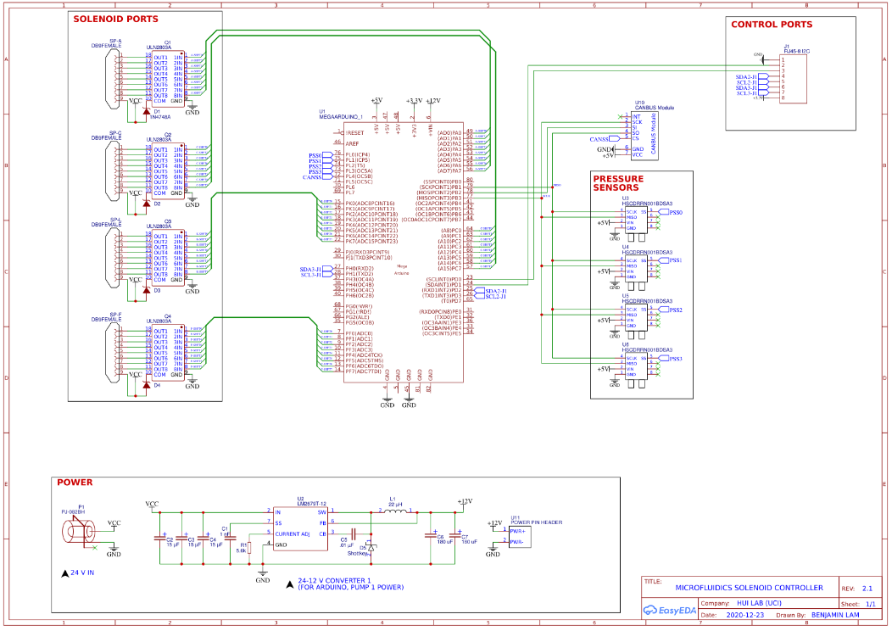
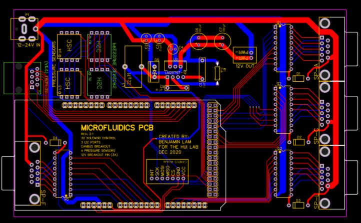
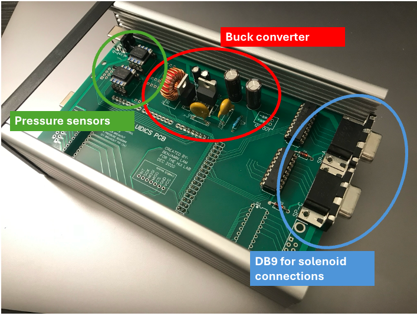

I developed an Arduino Mega shield with the ability to control up to 32 solenoids and record from 4 pressure sensors for microfluidics testing. The board takes 24V input and includes a buck converter to step down the power to 12V for the Arduino. A CANBUS module is also installed as an option for external communication. This was designed in EasyEDA [Link to project].

Figure 1: Schematic of the board.

Figure 2: Layout view of the board.

Figure 3: Real board inside enclosure. The board is modular and does not require all components to be installed. In this case, only 16 solenoid outputs were needed, so only 2 DB9 connectors were installed.